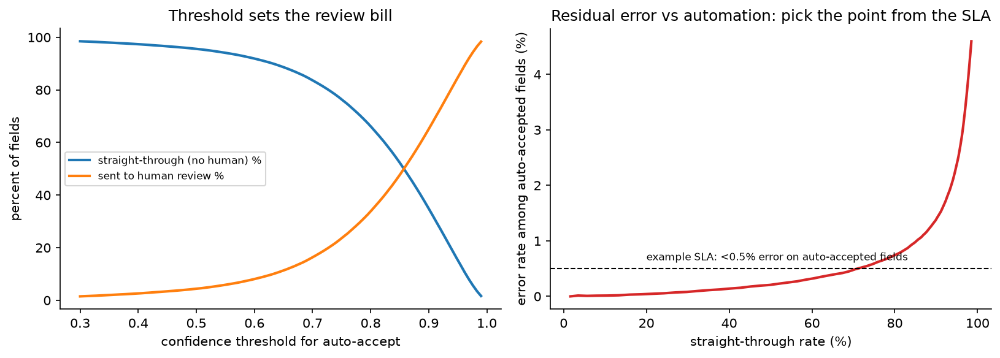
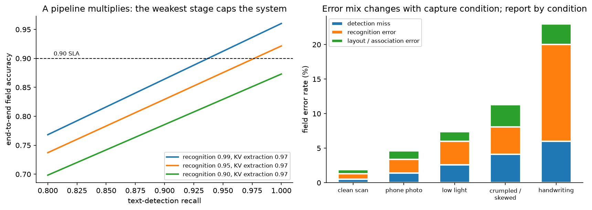

OCR & document understanding¶
Why this matters / who asks it. Amazon (Textract), Google (Document AI, Lens), Microsoft (Azure Document Intelligence), Apple (Live Text), and every fintech, insurer, logistics and marketplace company that verifies identity or processes invoices asks this question. The business problem is to turn a photographed or scanned page into structured fields a downstream system can act on, at an accuracy where the automated path is cheaper than a human typing it. The interviewer is looking for whether you understand that a pipeline multiplies its stage accuracies, whether you can choose between a staged pipeline and an end-to-end document model with a real argument, and whether you treat the human review queue as part of the system rather than as an admission of failure.
TL;DR: the whiteboard in 60 seconds¶
flowchart LR
IN[Page image<br/>scan, phone photo, PDF] --> PRE[Preprocess<br/>deskew, dewarp, denoise,<br/>quality gate + retake prompt]
PRE --> CLS[Document classifier<br/>type + orientation + language]
CLS --> DET[Text detection<br/>DBNet-style segmentation<br/>→ word/line polygons]
DET --> REC[Text recognition<br/>CTC or encoder-decoder<br/>→ strings + per-token confidence]
CLS --> LAY[Layout analysis<br/>blocks, tables, reading order]
REC --> KV[Key-value extraction<br/>layout-aware model<br/>or document VLM]
LAY --> KV
KV --> VAL[Validation<br/>checksums, regex, lookups,<br/>cross-field consistency]
VAL --> CONF{Confidence >= threshold?}
CONF -->|yes| OUT[Structured fields to<br/>downstream system]
CONF -->|no| HITL[Human review<br/>ranked queue, field-level]
HITL --> OUT
HITL --> LBL[(Corrections as labels)]
LBL --> TRAIN[Training: real + synthetic]
TRAIN --> DET
TRAIN --> REC
TRAIN --> KV- The pipeline multiplies. End-to-end field accuracy is roughly detection recall times recognition accuracy times extraction accuracy, so 0.97 at each of three stages is 0.91 overall. Know which stage is your ceiling before optimising.
- Detection plus recognition, or one model. A two-stage pipeline is debuggable, retrainable per stage, and gives you word boxes for free. A document VLM reads the page directly, which removes the error cascade and removes your ability to attribute an error.
- Layout is the information. A receipt's total is identified by where it sits, so key-value extraction uses 2D position as a first-class input (LayoutLM-style) or a model that sees the pixels.
- Synthetic data does most of the heavy lifting for recognition: render text in thousands of fonts over realistic backgrounds with realistic degradations, then fine-tune on a small real set. The domain gap is the thing to measure.
- Confidence drives automation. Per-field calibrated confidence sets the straight-through rate, and the threshold comes from the cost of a wrong field, not from a model metric.
- Validation is cheap accuracy. Checksums (IBAN, Luhn, MRZ check digits), regexes, arithmetic consistency (line items summing to the total), and database lookups catch errors the model cannot see.
- Report CER and WER for recognition and field-level F1 or exact match for extraction, and report them by capture condition, because a single average hides the phone-photo failures.
- Mobile versus server is a real fork: on-device gives privacy and works offline at a tight compute budget, server gives the large model and easy updates.
- Multilingual means script-aware detection, a recognition head per script family or a unified large vocabulary, and evaluation per script.
- Evidence: Google Document AI and Cloud Vision docs, Amazon Textract docs, Microsoft Azure Document Intelligence docs and TrOCR/LayoutLM research, Apple's Live Text documentation, and the Donut, LayoutLMv3, DBNet and CRNN literature.
1. Requirements & scoping¶
Functional. Accept an image or PDF, return the text with positions and the structured fields the business needs (for an invoice: vendor, date, total, tax, line items; for an ID: name, date of birth, document number, expiry, MRZ), each with a confidence and a provenance box on the page. Route low-confidence extractions to a human. Support the document types and languages the market requires.
Non-functional, with numbers to ask for.
| Quantity | Ask the interviewer | A defensible assumption |
|---|---|---|
| Volume | "Documents per day, peak per second?" | 2M pages/day, 100 pages/s peak |
| Latency | "Interactive or batch? Budget per page?" | Interactive capture: under 1 s on device; server pipeline: under 5 s per page |
| Accuracy target | "What field accuracy does the business need, and on which fields?" | 99%+ on identity fields, 95%+ on invoice line items |
| Automation target | "What straight-through rate justifies the project?" | 70 to 90% of documents fully automated |
| Review capacity | "Reviewers and seconds per field?" | 200 reviewers, 10 s per field |
| Document types | "How many templates? Do new ones appear?" | 50 known types plus a long tail of unseen layouts |
| Languages / scripts | "Which markets?" | Latin plus two non-Latin scripts at launch |
| Deployment | "On device, in our cloud, or a vendor API?" | Cloud, with on-device capture assistance |
| Compliance | "PII handling, retention, residency?" | Identity documents: encrypted, short retention, regional storage |
Success metrics.
- North star: cost per processed document, which combines automation rate and the cost of human review, plus the downstream error cost of a wrong field that got through.
- Guardrails: field-level error rate among auto-accepted fields (the number that must not rise), review queue backlog, latency, and per-condition and per-language breakdowns.
- Offline proxies: character error rate (CER) and word error rate (WER) for recognition, detection precision and recall at an IoU threshold, field-level exact match and F1 for extraction, and end-to-end document-level accuracy (all required fields correct), which is the metric the business actually feels.
Questions a staff engineer asks.
- "Which fields matter, and what does each wrong field cost? A wrong invoice total is a payment error; a wrong middle initial is noise."
- "Are the documents templated or arbitrary? Templated documents can be solved with anchors and rules far more cheaply than with a learned extractor."
- "Who captures the image? If it is our own app, I can fix half the problem in the camera with a quality gate and a retake prompt."
- "Is there a human in the loop today? Their corrections are my training data and my evaluation set."
- "Can we verify fields against an external source? A database lookup beats any model."
2. Data¶
Sources. Production documents (the only realistic distribution), vendor or public datasets for pretraining, synthetic renderings, and human corrections from the review queue.
Labels. Three levels, with different costs:
| Level | What it is | Cost | Where it comes from |
|---|---|---|---|
| Text with boxes | Every word, its polygon, its transcription | High | Vendor labelling; synthetic data gives it free |
| Field values | The structured output only | Low | The review queue produces it as a by-product |
| Field values with provenance | Value plus which box it came from | Medium | Reviewers clicking the source box; worth the extra second |
The practical insight: the review queue is a labelling pipeline that the business is already paying for. Design the reviewer UI so corrections are captured as structured labels with provenance, and the training set grows for free and in the right distribution.
Synthetic data. For recognition, synthetic rendering is the default training source: sample text from realistic corpora (names, addresses, amounts in the right formats), render in thousands of fonts, composite over document and photo backgrounds, then apply degradations that match the capture channel: JPEG artefacts, motion blur, defocus, uneven lighting and shadows, perspective warp, paper texture, crumple, print dithering, low resolution. The Donut authors shipped a synthetic document generator (SynthDoG) alongside the model for exactly this reason.
Two cautions to state. First, synthetic-only models fail on real degradations you did not simulate, so measure the gap on a real held-out set and let that gap drive which augmentations to add. Second, synthetic text distributions matter: if your generator never produces a date in the format the market uses, the model never learns it.
Biases and gaps.
- Capture-channel bias: the training set is scans, production is phone photos. Split every metric by capture condition.
- Selection bias in review labels: reviewers only see low-confidence documents, so corrections over-represent hard cases. That is good for training and wrong for measuring accuracy, which needs a random audit sample.
- Language and script imbalance: a model trained mostly on English degrades on scripts with different glyph density, diacritics, or right-to-left order.
- Name and address diversity: recognition models trained on Western names fail on others; this is a fairness issue with direct customer impact in identity verification.
Privacy. Identity documents and invoices are among the most sensitive data a company holds. Encrypt at rest and in transit, restrict access, keep short retention for images (often shorter than for the extracted fields), redact in logs, and be careful about training on production images, since consent for processing is not consent for training. On-device processing removes most of this problem, which is one of its main arguments.
3. Modelling¶
3.1 Baseline¶
An off-the-shelf OCR engine plus regular expressions and positional anchors per template. For templated documents this is genuinely competitive, it ships in a week, and it is the control arm for everything that follows. It fails when layouts vary, when a vendor changes their invoice, or when the document is photographed at an angle.
3.2 Preprocessing and the capture loop¶
The cheapest accuracy in the whole system is at capture. A quality gate on the device (blur estimate, glare detection, document-in-frame check, resolution floor) that asks the user to retake removes a large share of downstream failures, and it costs a small classifier. After capture: detect the document quadrilateral, dewarp to a rectangle, deskew, normalise contrast, and upscale if resolution is marginal.
Do not skip this in the interview. Candidates who jump to the recognition model without mentioning dewarping have usually not shipped an OCR product.
3.3 Text detection¶
Find where the text is. Two families:
- Segmentation-based (the production default for arbitrary shapes): predict a text/no-text probability map plus a threshold map and binarise. DBNet (Liao et al., "Real-time Scene Text Detection with Differentiable Binarization", AAAI 2020, arXiv:1911.08947) makes the binarisation step differentiable so the network learns its own thresholds, which simplifies post-processing; the paper reports 82.8 F-measure at 62 FPS on MSRA-TD500 with a ResNet-18 backbone. Segmentation handles curved and rotated text naturally.
- Regression-based: predict boxes or quadrilaterals directly (EAST-style). Simpler and faster, weaker on curved text and on dense small text.
Output granularity is a design choice: word boxes are convenient for key-value association; line boxes are better for recognition (more context for the language model inside the recogniser). Many systems produce lines and split into words afterwards.
3.4 Text recognition¶
Given a cropped line, produce the string. Two families, and the trade-off is worth stating precisely:
CTC-based (CNN or CNN plus RNN encoder, CTC loss). The network emits a per-frame distribution over characters plus a blank symbol, and CTC marginalises over all alignments that collapse to the target:
where \(\mathcal{B}\) removes blanks and merges repeats. It needs no alignment labels, decodes in one pass (fast, parallel), and is robust. Its weakness is limited context: the conditional independence between time steps means it cannot model long-range language structure without an external language model. CRNN (Shi, Bai & Yao, IEEE TPAMI 2017, arXiv:1507.05717) is the canonical architecture.
Attention encoder-decoder (including transformer recognisers). Autoregressive decoding over characters or word pieces, so the decoder is a language model conditioned on the image. Better on hard images and on languages with complex structure, and it produces well-formed strings more often. Costs: sequential decoding (slower), and a failure mode where the decoder hallucinates plausible text that is not on the page, which is far more dangerous than a CTC model outputting garbage, because it looks right. TrOCR (Li et al., arXiv:2109.10282) is a transformer encoder-decoder recogniser initialised from pretrained image and text transformers, and the paper reports state-of-the-art results on printed, handwritten and scene text at the time.
For a production system with a latency budget, the common answer is CTC for the high-volume path and an attention model for the hard cases, routed by the CTC model's confidence.
Confidence. Both families give a per-character or per-token probability. Aggregate to a field-level confidence (minimum or mean over characters, or a small calibration model over several features), and calibrate it against observed correctness, because raw softmax scores are over-confident. The calibration methods are in uncertainty & reliability.
3.5 Layout analysis and key-value extraction¶
Knowing the characters is not knowing the invoice total. Three approaches:
Rules and anchors. Find the label text ("Total"), take the value to its right or below. Works for templates, brittle otherwise, and still the right answer for a small set of high-volume known formats.
Layout-aware sequence models. Feed the tokens in reading order with their 2D coordinates as additional embeddings and tag each token (BIO tagging over field types). LayoutLM and its successors formalised this; LayoutLMv3 (Huang et al., "LayoutLMv3: Pre-training for Document AI with Unified Text and Image Masking", ACM Multimedia 2022, arXiv:2204.08387) unifies text and image masking objectives and adds a word-patch alignment objective, giving one pretrained model for both text-centric and image-centric document tasks. These models need OCR output as input, so they inherit its errors.
Document VLMs (OCR-free). A vision encoder reads the page image and a decoder generates the structured output directly, usually as a JSON-like string. Donut (Kim et al., "OCR-free Document Understanding Transformer", ECCV 2022, arXiv:2111.15664) introduced this framing, motivated by the cost of OCR engines, their inflexibility across languages and document types, and OCR error propagation. Modern document VLMs follow the same shape at larger scale.
The comparison to give:
| Pipeline (detect, recognise, extract) | Document VLM | |
|---|---|---|
| Error attribution | Per stage, so you know what to fix | One model, a wrong field has no locus |
| Provenance | Boxes for every value, free | Needs a separate grounding mechanism to show the user where a value came from |
| Adaptation | Retrain one stage | Retrain everything |
| New document type | Extraction head only | Fine-tune the whole model |
| Latency | Several models, parallelisable | One forward pass, autoregressive decode |
| Failure mode | Garbage text, visible | Fluent hallucination, invisible |
| Data need | Box labels expensive, synthetic helps | Field labels only, which the review queue produces |
The staff answer is usually a hybrid: run the pipeline for text and provenance, run a VLM for extraction on the documents where layout is unusual, and use the pipeline's text as a grounding check on the VLM's output so a hallucinated total can be caught by searching for it on the page.
3.6 Validation¶
Cheap, deterministic, and it catches errors no model will:
- Check digits: MRZ check digits on passports, Luhn on card numbers, IBAN checksums, ISBN. A failed check digit is a definite error, which is stronger evidence than any confidence score.
- Format and range: dates that parse and fall in a plausible range, amounts with the right currency and scale.
- Cross-field consistency: line items summing to the subtotal, subtotal plus tax equalling the total, expiry after issue.
- External lookups: vendor name against the supplier master, address against a postal database, document number against an issuing authority where available.
Fold these into the confidence used for routing: a field that fails validation goes to review regardless of model confidence, and a field that passes a check digit can be auto-accepted at a lower model confidence.
3.7 Human in the loop¶
The review queue is a designed subsystem:
- Field-level, not document-level. Send the three uncertain fields, not the whole document, which cuts reviewer time by an order of magnitude.
- Show provenance. The crop of the page where the value came from, so the reviewer verifies rather than re-reads.
- Rank the queue by expected cost saved: probability of error times the cost of that error, divided by expected review time.
- Capture corrections as labels, with the box, so they feed training.
- Measure reviewers: inter-reviewer agreement and error rate on golden documents seeded into the queue, because reviewer error becomes label noise.

Left: the confidence threshold moves work between the automated path and the review queue, which is the cost lever. Right: the residual error among auto-accepted fields rises steeply as automation approaches 100%, so the SLA on auto-accepted error picks the operating point.
3.8 Where the accuracy budget goes¶

Left: with three stages in series, the end-to-end field accuracy is the product, so detection recall below 0.95 makes a 0.90 SLA unreachable no matter how good the recogniser is. Right (illustrative): the mix of error types shifts with capture condition, which is why the error budget is tracked per condition rather than in aggregate.
4. Training & serving¶
Training. Detection and recognition are trained mostly on synthetic data with real fine-tuning; the extraction model is trained on field labels from the review queue. Cadence: recognition monthly or when a new script or font family appears, extraction weekly (it sees the most distribution change as new vendors and templates arrive), detection rarely once it is good.
Active learning. Prioritise labelling where the model is uncertain, where validation failed, and where two models disagree (for instance the CTC recogniser and the attention recogniser, or the pipeline and the VLM). Disagreement is a much better sampling signal than raw uncertainty because it finds systematic errors rather than inherently ambiguous glyphs.
Serving.
| Stage | Server budget | On-device budget |
|---|---|---|
| Quality gate and dewarp | 30 ms | 20 ms, every frame in the viewfinder |
| Document classification | 20 ms | 10 ms |
| Detection | 120 ms (GPU, batched) | 60 ms (NPU, quantised) |
| Recognition (all lines) | 200 ms | 150 ms |
| Layout and extraction | 300 ms | usually server |
| Validation and lookups | 100 ms | server |
| Total | ~0.8 s per page | ~250 ms for text overlay |
On-device recognition runs quantised and distilled models on the phone's neural accelerator; the quantization chapter covers the mechanics. The practical constraints are model size (app bundle limits), memory, thermal throttling during a long scan session, and the fact that model updates ship with app releases unless you build a model-download mechanism.
Batch processing. Most document pipelines are batch, which changes the engineering: throughput per GPU-hour matters more than latency, so batch aggressively, sort pages by size to reduce padding waste, and checkpoint so a failure does not reprocess a million pages.
Cost. At 2M pages/day with 0.5 GPU-seconds per page, that is about 1M GPU-seconds per day, roughly 12 GPUs running continuously, which is small next to the review cost: at 20% of documents needing review and 30 seconds each, that is 400k reviewer-seconds per day, over 100 reviewer-hours. The automation rate is the dominant cost term, which is why the confidence threshold gets so much attention.
5. Evaluation & experimentation¶
Offline.
- Recognition: CER and WER. CER is the edit distance between predicted and reference strings divided by reference length. Report both, since a system can have low CER and high WER (one wrong character per word) which downstream systems feel as total failure.
- Detection: precision and recall at an IoU threshold, plus a "text missed" count weighted by whether the missed text was in a field of interest.
- Extraction: field-level exact match and F1 per field type, and document-level all-fields-correct, which is the metric the business experiences and which is brutally lower than the per-field average.
- Per-condition and per-language breakdowns, always. An aggregate CER dominated by clean scans hides that phone photos in one market are failing.
- Calibration of confidence against observed correctness, since the threshold policy depends on it.
- Pitfalls: evaluating on the same synthetic distribution you trained on; evaluating on documents that came from the review queue (which are the hard ones); measuring CER on the whole page when only five fields matter; and ignoring reading order, which can be correct character-wise and useless structurally.
Online. A/B on straight-through rate with auto-accepted error rate as the guardrail, measured by seeding a random audit sample of auto-accepted documents into the review queue. That audit stream is the only unbiased estimate of the error you are letting through, and it should be budgeted from day one.
Monitoring. Per-document-type volume and confidence distributions, straight-through rate, review backlog, validation failure rates per rule, per-language CER on a canary set, and the rate of documents rejected at the quality gate (a jump means a capture UX regression or a new device with a different camera). Retrain when a new document type appears in volume, when a language's canary CER drifts, or when the review correction rate for a field rises.
6. Trade-offs & alternatives¶
| Decision | Chosen | Alternative | When you'd flip |
|---|---|---|---|
| Architecture | Staged pipeline with a VLM for hard layouts | Pure document VLM | Field labels are plentiful, provenance is not required, and layouts are highly varied |
| Recognition | CTC for volume, attention model for hard cases | Attention everywhere | Latency is generous and hallucination risk is acceptable |
| Detection | Segmentation (DBNet-style) | Box regression | Text is always axis-aligned and dense (forms, tables), where regression is faster |
| Extraction | Layout-aware tagging model | Rules and anchors | A small set of stable, high-volume templates, where rules are cheaper and auditable |
| Training data | Synthetic first, real fine-tune | Real data only | A domain synthetic rendering cannot capture (handwriting styles, historical documents) |
| Confidence | Calibrated per field, plus validation rules | Raw model score | Never raw; the routing policy depends on calibration |
| Review | Field-level with provenance | Document-level re-keying | Legacy operations where re-keying is already the process; migrate quickly |
| Deployment | Server pipeline, on-device capture assistance | Fully on-device | Privacy or offline requirements, at the cost of model size and update latency |
| Multilingual | One detector, script-routed recognisers | One unified recogniser | Small script set with shared glyphs; a unified model is simpler to operate |
Failure modes.
- Fluent hallucination from the decoder: the model outputs a plausible total that is not on the page. Detect by grounding (search the recognised text for the extracted value) and by validation rules. This is the strongest argument for keeping a pipeline path alongside a VLM.
- A vendor changes their invoice template: extraction accuracy for that vendor collapses while the aggregate barely moves. Monitor per-vendor and per-type.
- A new phone camera: different colour processing or aggressive denoising changes the input distribution. Monitor per-device-model CER on a canary set.
- Reading-order failures on multi-column pages: text is correct, structure is wrong, and extraction silently associates the wrong label with the wrong value.
- Confidence drift after a model update: the thresholds were tuned for the old score distribution, so the straight-through rate jumps or collapses. Recalibrate with every model push and treat the threshold as part of the model artefact.
- Review queue starvation or flood: both are symptoms of confidence drift, and both show up in the operations dashboard before they show up in an offline metric.
7. How real companies did it: as mock interviews¶
7.1 Amazon Textract, "beyond raw text"¶
Interviewer prompt. "Customers send us scanned forms and invoices. Plain OCR gives them a wall of text they still have to parse. What does the product need to return, and what does that imply for the models?"
Candidate walkthrough. Clarify: the useful output is structured, so the system must return key-value pairs, tables and form fields with confidence and positions, not just characters. Metrics: field-level accuracy and the share of documents that need no human touch. Data: a wide variety of customer document types, so the model must generalise past templates. Model: text detection and recognition, plus models for form key-value association and table structure, plus specialised extractors for common document classes (identity documents, invoices, receipts) where the fields are known. Serve: both synchronous per-page and asynchronous batch APIs, since customers have both interactive and bulk workloads. Evaluate: per-field accuracy with confidence scores exposed so customers can set their own review thresholds, plus a human-review integration.
What the sources say. AWS documentation for Amazon Textract describes extraction of printed text, handwriting, forms (key-value pairs), tables and structured data from documents, with confidence scores for extracted items, specialised APIs for analysing identity documents, invoices and receipts, synchronous and asynchronous operations, and integration with Amazon Augmented AI (A2I) for human review of low-confidence results.
How to say it in the interview: return structure and confidence, not text
"The output contract is the design decision I'd make first. I'd return key-value pairs, table cells and field values with a confidence and a bounding box for each, instead of a text blob. Amazon Textract's API is built this way: forms, tables, and specialised extraction for invoices and identity documents, each with confidence scores, plus a documented path to route low-confidence results to human review through Augmented AI. The alternative, returning text and letting the customer parse it, is much less work for us and pushes the hard part onto every customer, who then writes worse regexes than we would. The trade-off is that structured output commits us to a schema per document type and to maintaining extractors as templates change. I'd accept that, because the confidence-plus-provenance contract is what lets a customer automate at all: it is the input to their threshold policy and their review queue."
7.2 Google Document AI, "processors per document type"¶
Interviewer prompt. "We serve many industries with very different documents: lending, insurance, procurement. Do we build one model or many, and how do customers handle a document type we have never seen?"
Candidate walkthrough. Clarify: there is a head of common document types (invoices, receipts, IDs, tax forms) and an unbounded tail of customer-specific forms. Model: pretrained specialised extractors for the head, plus a general form-parsing capability and a way for customers to train a custom extractor on their own labelled documents for the tail. Data: for custom extractors, the customer labels a modest number of documents, which means the underlying model must be pretrained enough to fine-tune from few examples. Serve: a processor abstraction so each document type is a versioned endpoint. Evaluate: per-processor field accuracy, with human review for low confidence.
What the sources say. Google Cloud's Document AI documentation describes processors for document parsing including specialised processors for document types such as invoices, receipts and identity documents, a general form parser, custom extractor training on customer-labelled documents, confidence scores on extracted entities, and a human-in-the-loop review capability.
How to say it in the interview: head with specialists, tail with fine-tuning
"I'd split the problem into a head and a tail. The head is document types we see constantly, invoices, receipts, IDs, and each gets a specialised extractor tuned for its schema. The tail is every customer's own form, and that gets a general parser plus a path to fine-tune a custom extractor from a modest number of labelled examples. Google's Document AI is organised exactly this way, with specialised processors, a general form parser and custom extractor training. The alternative is one universal model, which is a cleaner story and loses to a specialist on the high-volume types where the schema is known and the accuracy bar is highest. The trade-off is operational: many processors means many versioned artefacts to evaluate and keep from regressing, so I'd want one evaluation harness that runs every processor against its own golden set on every backbone change."
7.3 Microsoft, "read the line with a pretrained transformer"¶
Interviewer prompt. "Our recognition model is a CNN plus CTC. It struggles on handwriting and on degraded scans. What would you replace it with, and what do you give up?"
Candidate walkthrough. Clarify: the latency budget and whether the workload is batch. Model: an encoder-decoder recogniser where the image encoder and the text decoder are both initialised from large pretrained models, trained on large-scale synthetic text and fine-tuned on human-labelled data. Data: synthetic first, real fine-tuning. Serve: autoregressive decoding costs more than CTC, so route by difficulty. Evaluate: CER and WER on printed, handwritten and scene text separately, because they are different distributions.
What the source says. Li et al., "TrOCR: Transformer-based Optical Character Recognition with Pre-trained Models" (arXiv:2109.10282) describes an end-to-end text recognition model with no convolutional layers, built from pretrained image and text transformers, pretrained on large-scale synthetic data and fine-tuned on human-labelled datasets, and reports outperforming the prior state of the art on printed, handwritten and scene text recognition.
How to say it in the interview: attention decoder for hard lines, CTC for volume
"I'd keep CTC on the high-volume path and route hard lines to a transformer encoder-decoder recogniser. TrOCR, published by Microsoft in 2021, is the reference point: an encoder-decoder built from pretrained image and text transformers, trained on large-scale synthetic data and fine-tuned on human labels, reported to beat the prior state of the art on printed, handwritten and scene text. The reason I would not put it everywhere is decoding cost and a specific failure mode: an autoregressive decoder with a language model inside it will produce fluent text that is not on the page, which is far more dangerous than CTC producing obvious garbage, because a plausible wrong total gets auto-accepted. So the routing rule is CTC first, escalate on low confidence, and always ground the final value by checking it appears in the detected text."
7.4 Clova / Donut, "skip OCR entirely"¶
Interviewer prompt. "Our pipeline has three models and the errors compound. A missed word in detection is an empty field downstream. Is there a design that removes the cascade?"
Candidate walkthrough. Clarify: do we need provenance boxes for the user, and do we have field-level labels. Model: an image encoder and a text decoder trained to emit the structured output directly from the page image, with no OCR stage. Data: field labels only, which the review queue already produces, plus a synthetic document generator to pretrain the reading ability. Serve: one model, autoregressive decode over the output structure. Evaluate: field accuracy and document-level exact match, plus a check for hallucinated values.
What the source says. Kim et al., "OCR-free Document Understanding Transformer" (ECCV 2022, arXiv:2111.15664) introduces Donut, motivated by the computational cost of OCR engines, their inflexibility across languages and document types, and OCR error propagation, and releases a synthetic document generator (SynthDoG) used for pretraining.
How to say it in the interview: OCR-free, with a grounding check
"If the cascade is the problem, the OCR-free design addresses it directly: one encoder-decoder that reads the page and emits the structured fields, which is what Donut proposed at ECCV 2022, citing OCR cost, language inflexibility and error propagation as the motivation, along with a synthetic document generator for pretraining. The alternative, my staged pipeline, gives me error attribution and a box for every value, which the reviewer UI and the audit trail both need. The trade-off that decides it for me in a financial setting is the failure mode: a generative decoder can emit a total that never appeared on the page, and it will look completely normal. So my design keeps the pipeline for text and provenance, uses the OCR-free model for extraction on unusual layouts, and verifies every extracted value by searching for it in the recognised text. If it is not on the page, it goes to review."
7.5 Apple Live Text, "OCR as an interface, on the device"¶
Interviewer prompt. "We want text in photos and the camera viewfinder to be selectable, in real time, with no server. What does that constrain?"
Candidate walkthrough. Clarify: the product is interaction rather than extraction, so latency and responsiveness dominate and the accuracy bar is "good enough to select and copy". Metrics: perceived latency, and recognition accuracy on the scripts supported. Model: compact detection and recognition models running on the device's neural accelerator, quantised, with the detector running on viewfinder frames at a reduced rate and recognition only on regions the user interacts with. Serve: entirely on device, so privacy is structural and the feature works offline; model updates ship with OS releases. Evaluate: per-language accuracy and battery and thermal behaviour during extended use.
What the sources say. Apple's platform documentation describes Live Text as recognising text in images and the camera view on device, supporting selection, copy, translation and lookup, with a documented list of supported languages, and Apple's developer frameworks (the Vision framework's text recognition) expose on-device text recognition with fast and accurate recognition levels.
How to say it in the interview: on-device changes the metric, not just the model
"For a camera-overlay feature I'd run everything on device, which Apple does for Live Text: recognition happens locally, so it works offline and the image never leaves the phone. That changes what I optimise. The metric stops being field accuracy and becomes perceived latency and stability of the overlay, because text boxes that jitter between frames feel broken even when every character is right. So I'd run detection at a reduced frame rate with temporal smoothing across frames, and run recognition only on regions the user touches. The alternative, sending frames to a server, gives a bigger model and easy updates, and it costs privacy, offline capability and round-trip latency that no model improvement can recover. The trade-off I'd flag is update cadence: on-device models ship with OS or app releases, so a language gap takes months to fix unless we build a model download path."
7.6 Identity verification, "the fields must be right"¶
Interviewer prompt. "We verify identity documents for account opening. A wrong date of birth is a compliance failure and a blocked customer. How do you get the last few percent?"
Candidate walkthrough. Clarify: high cost per error in both directions, strong structure in the documents (MRZ, fixed fields), and an existing manual review process. Metrics: field error rate on auto-accepted documents, plus straight-through rate and time to decision. Data: real documents (heavily restricted), synthetic documents generated from templates, and review corrections. Model: pipeline OCR with an MRZ parser as a second, independent read of the same fields; cross-check the MRZ against the visual zone, and the check digits against both. Serve: capture assistance in the app (the single largest accuracy lever), server-side extraction, human review for mismatches. Evaluate: audit sample of auto-accepted documents, per-country and per-document-type breakdowns.
What the sources say. The ICAO 9303 standard specifies the machine-readable zone format and its check-digit scheme for travel documents, which gives an independent verification path for the same fields printed in the visual zone; cloud providers' identity-document APIs (including Amazon Textract's identity document analysis and Google Document AI's identity processors) expose these fields with confidence scores.
How to say it in the interview: two independent reads beat one better model
"For identity documents, the accuracy lever I'd reach for before any model change is redundancy: read the same fields twice by independent means and compare. The machine-readable zone under ICAO 9303 encodes name, document number, date of birth and expiry with check digits, so I can parse the MRZ, parse the visual zone, verify the check digits, and only auto-accept when all three agree. That turns a confidence estimate into something much closer to a proof. The alternative is pushing the recogniser's accuracy higher, which has diminishing returns exactly where the documents are worn or photographed badly. The trade-off is that documents without an MRZ, many national ID cards and driving licences, do not get this redundancy, so for those I'd fall back to a lower auto-accept threshold and a higher review rate, and I'd report the straight-through rate per document type so nobody averages the two together."
8. Staff-level follow-ups¶
Your field accuracy is 91% and the business wants 97%. Where do you look?
Decompose before optimising. Take a sample of failures and attribute each to a stage: was the text detected, was it recognised correctly, was the right box associated with the right field. That triage usually shows the budget is not where people assume. If detection recall is 0.95, the ceiling is 0.95 no matter what the recogniser does, and the fix is dewarping, resolution, or a detector trained on your capture conditions. If recognition is the gap, look at whether it concentrates in one font, one language or one capture condition, because that points at a data gap rather than a modelling one. If association is the gap, the fix is layout, and a layout-aware extraction model is the answer. I'd also check how much of the remaining 9% validation rules could catch for free, since check digits and arithmetic consistency are the cheapest accuracy in the system.
Pipeline or end-to-end document model? Commit.
Hybrid, and I'd commit to that with the reason. The pipeline gives me two things a single generative model does not: error attribution, so I know which stage to fix, and a bounding box for every value, which the reviewer UI and the audit trail need. The document VLM gives me robustness on layouts I have never seen and it trains on field labels alone, which the review queue produces for free. So: pipeline for text and provenance, VLM for extraction where layout is unusual, and the pipeline's recognised text used to verify the VLM's outputs. If the interviewer forces a single choice, I'd take the pipeline for a financial or identity workload where provenance and attribution are required, and the VLM for a document-understanding product with varied layouts and no audit requirement.
How do you set the auto-accept threshold?
From the cost of a wrong field and the cost of a review, per field type. For each field, plot the error rate among auto-accepted values as a function of the threshold using a held-out set with correct labels, then find the threshold where the marginal error cost equals the marginal review cost. High-cost fields (an amount, a date of birth) get conservative thresholds; low-cost fields get aggressive ones. Two details that matter: the confidence must be calibrated, or the curve is meaningless, and the threshold is part of the model artefact, so it is recalibrated with every model push. I would also override the threshold with validation: a failed check digit routes to review at any confidence, and a passed check digit can auto-accept at a lower one.
How much synthetic data, and how do you know it is working?
Most of the recognition training set, and the way to know is to hold out real data and watch the gap. Train on synthetic only, measure CER on a real held-out set, then add real fine-tuning data and watch how much the gap closes per thousand real examples. That curve tells you whether to buy more labels or to improve the generator. When the gap is large, inspect the failures for the degradation you forgot to simulate, which in my experience is usually lighting: shadows, glare from a phone flash, and the aggressive denoising in modern phone cameras that smears thin strokes. Also check the text distribution, since a generator that never produces the date format or the name distribution of your market teaches the model a prior that is wrong.
The same document processed twice gives different answers. Why, and does it matter?
It matters a lot, because customers notice and because it makes debugging impossible. Causes, in order of likelihood: nondeterministic batching in the serving stack combined with a non-deterministic kernel, an autoregressive decoder with sampling enabled (set it to greedy), preprocessing that depends on image metadata handled differently by two code paths, and genuinely borderline confidences flipping across the threshold. The last one is the interesting case: if a field sits at the threshold, small numerical differences change the routing decision, so I'd add hysteresis for reprocessed documents and log the confidence so the flip is visible rather than mysterious.
You need to support a new language next quarter. What does that take?
Four things, in order. Detection usually transfers, since text is text, but verify on real samples for scripts with very different glyph density or with connected scripts. Recognition needs a new character set and a new synthetic corpus, which means sourcing realistic text (names, addresses and number formats for that market) and fonts, which is often the long pole. Extraction needs the label vocabulary in that language, so "Total" has to be recognised in its local forms, or the model has to learn positional cues instead. Evaluation needs a real labelled set in that language, with native-speaker reviewers, and it needs its own metric line in the dashboard from day one, because otherwise the aggregate will hide it. I'd also check reading order for right-to-left and vertical scripts, since that silently breaks field association.
Would you use a general-purpose VLM instead of all this?
For prototyping, yes, and I'd say so. A strong general VLM given a page and a schema will extract fields surprisingly well with no training, which is an excellent way to establish a baseline and to generate labels for a smaller model. For production at two million pages a day, the cost per page and the latency do not close, and the failure mode is fluent invention. So the design I'd propose is: use the large VLM offline to label training data and to handle the long tail of rare document types, distil it into the specialised pipeline that handles volume, and keep the grounding check on every extracted value. That is the same teacher-student pattern as in the AV perception chapter, for the same reason.
A customer says your OCR is biased against their users' names. How do you respond?
Measure it first, per name origin and per script, using a constructed evaluation set rather than production traffic (which is already filtered by who succeeded). The usual mechanism is training data: synthetic corpora built from Western name lists teach the recogniser a prior that penalises unfamiliar character sequences, and the attention decoder's internal language model then "corrects" a correct reading into a familiar name. That last failure is the worst kind, because the output is confident and wrong. Fixes: broaden the synthetic name corpus, reduce the decoder's language-model influence for name fields (or use the CTC path for them), and set name-field thresholds from the per-group error rates rather than the aggregate. Then report the per-group metrics publicly inside the company so the gap cannot be averaged away.
What breaks first at 10x volume?
Human review, the same as in moderation and fraud, because it scales with people rather than machines. That forces the automation rate up, which forces the confidence work and the validation rules, which is where I would put engineering effort long before the GPUs. Second is the storage and retention pipeline for images, which at ten times the volume runs into both cost and compliance limits. Third is the batch scheduler: at ten times the pages, a full reprocessing run after a model change goes from overnight to days, so reprocessing needs to become incremental and prioritised rather than a full sweep.
Give me the one metric you would show the business.
Cost per processed document, split into compute and review, with the auto-accepted error rate plotted next to it. One without the other is easy to move the wrong way: cost falls beautifully if you auto-accept everything, and the error rate is perfect if you review everything. The pair shows whether the system is actually getting better.
9. Scaling & evolution¶
- First version. An off-the-shelf OCR engine, template rules, and human review of everything with the corrections captured as labels. The goal is to learn the document distribution and to build the label pipeline.
- Production. Own detection and recognition models trained on synthetic plus real data, a layout-aware extraction model, calibrated confidence, validation rules, field-level review with provenance, and per-type metrics.
- Scale. Per-document-type specialists for the head, a general extractor for the tail, active learning driven by disagreement, an audit stream for unbiased error measurement, on-device capture assistance, and per-language canaries.
- Batch to real-time. Interactive capture (Live Text-style overlays, instant field extraction while the user holds the camera) needs a quantised on-device model and temporal smoothing, and it turns the accuracy problem into a responsiveness problem.
- Pipelines to document VLMs. The direction of travel is a single model reading the page, and the blockers are provenance, hallucination and cost. The staged path is: use the VLM offline as a labeller and for the rare-layout tail, distil into the serving models, and keep the grounding check until the hallucination rate on your own audit set is low enough to drop it.
References¶
- Liao, M. et al. "Real-time Scene Text Detection with Differentiable Binarization." AAAI 2020 (arXiv:1911.08947).
- Shi, B., Bai, X., Yao, C. "An End-to-End Trainable Neural Network for Image-based Sequence Recognition and Its Application to Scene Text Recognition" (CRNN). IEEE TPAMI 2017 (arXiv:1507.05717).
- Graves, A. et al. "Connectionist Temporal Classification: Labelling Unsegmented Sequence Data with Recurrent Neural Networks." ICML 2006.
- Li, M. et al. "TrOCR: Transformer-based Optical Character Recognition with Pre-trained Models." 2021 (arXiv:2109.10282).
- Kim, G. et al. "OCR-free Document Understanding Transformer" (Donut). ECCV 2022 (arXiv:2111.15664).
- Huang, Y. et al. "LayoutLMv3: Pre-training for Document AI with Unified Text and Image Masking." ACM Multimedia 2022 (arXiv:2204.08387).
- Xu, Y. et al. "LayoutLM: Pre-training of Text and Layout for Document Image Understanding." KDD 2020 (arXiv:1912.13318).
- Amazon Web Services. "Amazon Textract" developer documentation (forms, tables, identity documents, invoices and receipts, confidence scores, Augmented A2I human review) (docs.aws.amazon.com, analysing documents).
- Google Cloud. "Document AI" documentation (specialised processors, form parser, custom extractor training, human-in-the-loop review) (overview, processor list).
- Microsoft. "Azure AI Document Intelligence" documentation, including the page on interpreting model accuracy and confidence scores (learn.microsoft.com).
- Apple. Live Text user-guide documentation (support.apple.com) and the Vision framework's
VNRecognizeTextRequest(developer.apple.com). - ICAO. "Doc 9303, Machine Readable Travel Documents" (MRZ format and check digits) (icao.int).
- Book cross-references: detection, VLM architecture, quantization, uncertainty & reliability, weak supervision & auto-labeling, AV perception (teacher-student), LLM assistant with RAG (document ingestion).